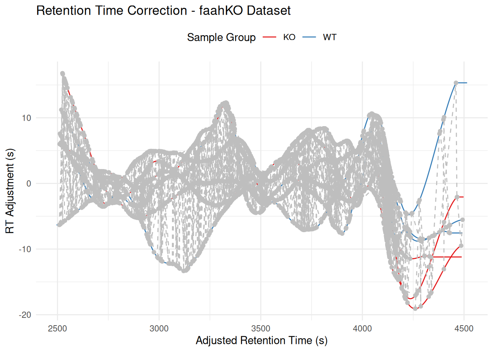
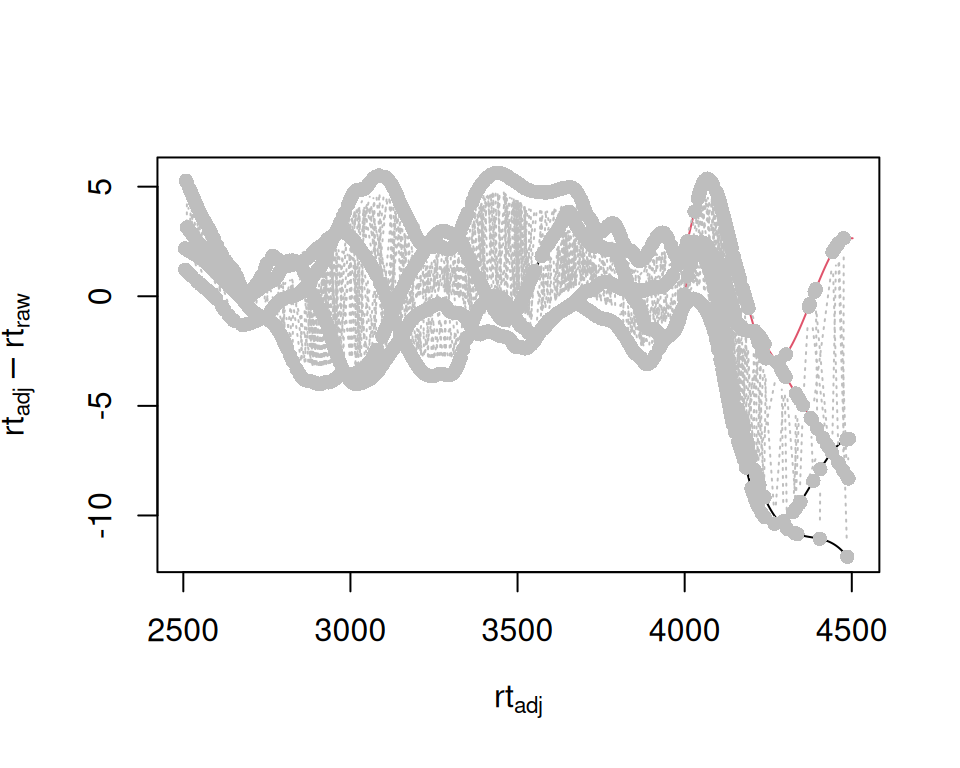
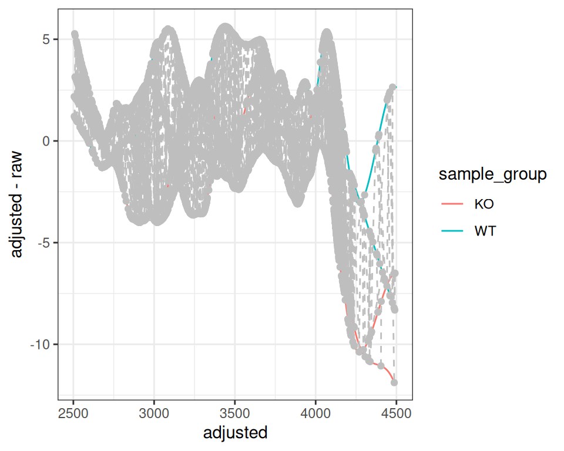
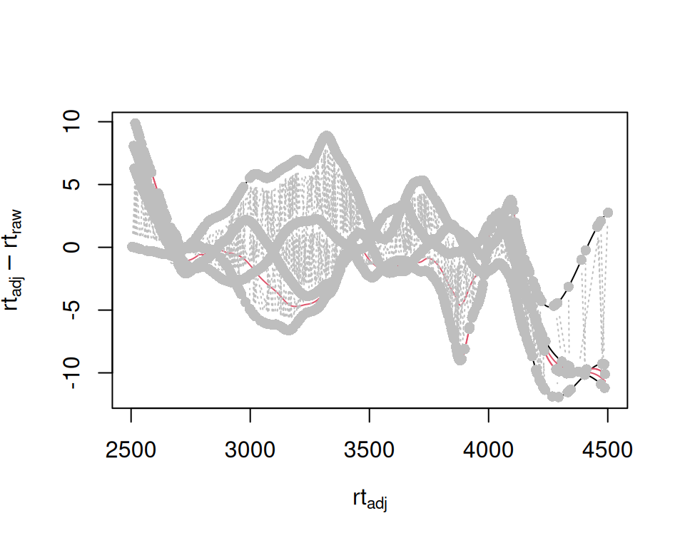
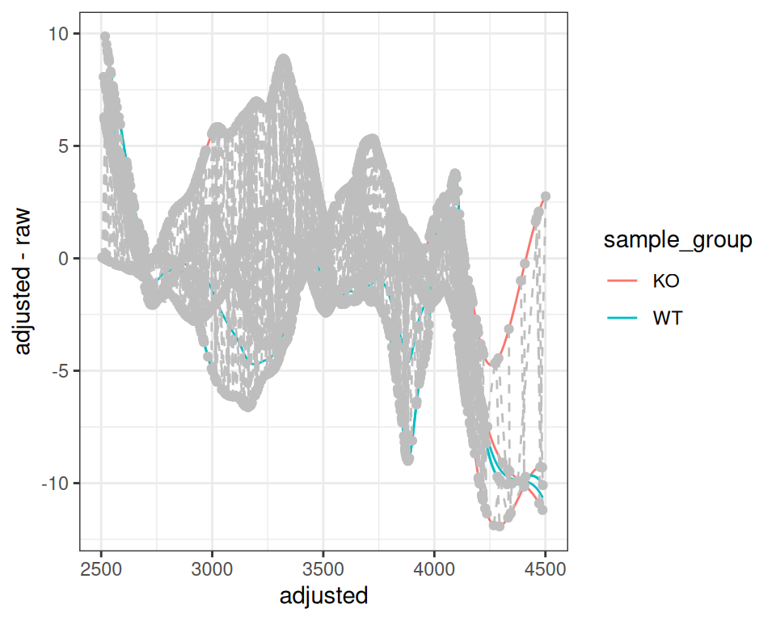
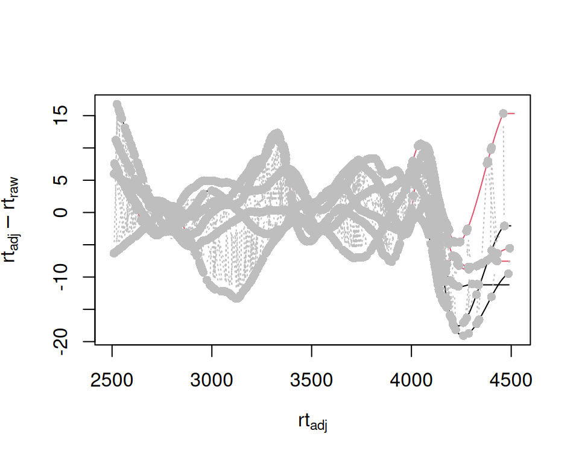
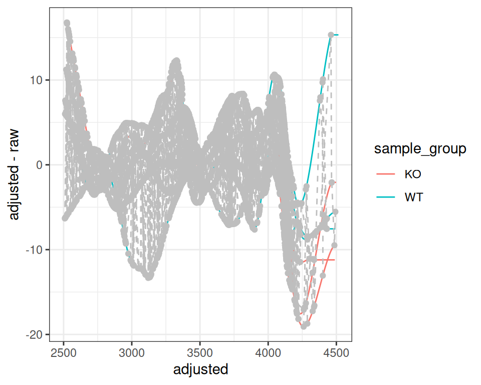

Visualizing Retention Time Adjustment with gplotAdjustedRtime
2025-11-08
Source:vignettes/gplotAdjustedRtime.qmd
Introduction
This vignette demonstrates the gplotAdjustedRtime() function, which provides a ggplot2-based visualization of retention time correction in LC-MS metabolomics data. The function is designed to work with both XcmsExperiment (XCMS v4+) and XCMSnExp (XCMS v3) objects.
Setup
Data Preparation
We’ll use the faahKO package, which contains example LC-MS data from an analysis of fatty acid amide hydrolase (FAAH) knockout mice.
# Get example CDF files from faahKO package (load once, reuse throughout)
cdf_files <- dir(system.file("cdf", package = "faahKO"),
recursive = TRUE, full.names = TRUE)
# Using 3 samples from each group (6 total)
cdf_files <- cdf_files[c(1:3, 7:9)]
# Load data as XcmsExperiment
# Use SerialParam for faster processing with small datasets
xdata_raw <- readMsExperiment(
spectraFiles = cdf_files,
BPPARAM = SerialParam()
)
# Add sample metadata
sample_group <- rep(c("KO", "WT"), each = 3)
sampleData(xdata_raw)$sample_name <- basename(cdf_files)
sampleData(xdata_raw)$sample_group <- sample_groupData can also be of the old style “XCMSnExp” (not run) from MSnbase.
Peak Detection (performed once)
# Peak detection using CentWave algorithm (done once for efficiency)
cwp <- CentWaveParam(
peakwidth = c(20, 80),
ppm = 25
)
# Use SerialParam for faster processing with small datasets
xdata_peaks <- findChromPeaks(xdata_raw, param = cwp, BPPARAM = SerialParam())
# Initial correspondence (peak grouping) - done once for all examples
sample_data <- xcmsVis:::.get_sample_data(xdata_peaks)
pdp <- PeakDensityParam(
sampleGroups = sample_data$sample_group,
minFraction = 0.4,
bw = 30
)
xdata_grouped <- groupChromPeaks(xdata_peaks, param = pdp)Basic Usage
Complete XCMS Workflow
The proper XCMS workflow for retention time adjustment using peak groups is:
- Peak detection (already done above)
- Initial correspondence (grouping - already done above)
- Retention time adjustment
- (Re-do correspondence after alignment - not needed for visualization)
# Work with a copy of the grouped data
xdata <- xdata_grouped
# Retention time alignment using peak groups
pgp <- PeakGroupsParam(
minFraction = 0.4,
smooth = "loess",
span = 0.2,
family = "gaussian"
)
xdata <- adjustRtime(xdata, param = pgp)
# Note: Second groupChromPeaks after alignment is typically done for downstream
# analysis (fillChromPeaks, feature tables), but not needed for RT visualizationCreating the Plot
# ggplot2 version
p <- gplotAdjustedRtime(xdata, color_by = sample_group)
print(p)
The plot shows:
- Lines: One per sample, showing RT deviation across the chromatographic run
- Grey circles: Individual peaks used for alignment
- Grey dashed lines: Connect peaks from the same feature across samples
Customizing the Plot
Since gplotAdjustedRtime() returns a ggplot object, you can easily customize it:
p +
labs(
title = "Retention Time Correction - faahKO Dataset",
x = "Adjusted Retention Time (s)",
y = "RT Adjustment (s)",
color = "Sample Group"
) +
theme_minimal() +
scale_color_brewer(palette = "Set1") +
theme(legend.position = "top")
Interactive Visualization
Convert to an interactive plotly plot:
# Make it interactive
p_interactive <- ggplotly(p, tooltip = "text")
p_interactiveNote that you can hover over a line and see the file path and metadata.
Advanced Use Cases
With filterFile()
Sometimes you may want to filter samples before alignment:
# Work with a fresh copy from grouped data
xdata_filtered <- xdata_grouped
# Filter to specific samples (files 2-5)
xdata_filtered <- filterFile(xdata_filtered, c(2:5))
# Filtering removes correspondence - need to re-group with filtered samples
sample_data_filtered <- xcmsVis:::.get_sample_data(xdata_filtered)
pdp_filtered <- PeakDensityParam(
sampleGroups = sample_data_filtered$sample_group,
minFraction = 0.4,
bw = 30
)
xdata_filtered <- groupChromPeaks(xdata_filtered, param = pdp_filtered)
# Align filtered data
pgp_filter <- PeakGroupsParam(minFraction = 0.4)
xdata_filtered <- adjustRtime(xdata_filtered, param = pgp_filter)
p_filtered <- gplotAdjustedRtime(xdata_filtered, color_by = sample_group)
print(p_filtered)
With subset Parameter in PeakGroupsParam
You can use only specific samples for alignment calculation while keeping all samples in the dataset:
# Work with a fresh copy of grouped data
xdata_subset <- xdata_grouped
# Use subset parameter to align using only specific samples
pgp_subset <- PeakGroupsParam(
minFraction = 0.4,
smooth = "loess",
span = 0.2,
family = "gaussian",
subset = c(1, 2, 3, 5) # Exclude sample 4 from alignment calculation
)
xdata_subset <- adjustRtime(xdata_subset, param = pgp_subset)
p_subset <- gplotAdjustedRtime(xdata_subset, color_by = sample_group)
print(p_subset)
Without subset Parameter (All Samples)
For comparison, here’s alignment using all samples:
# Work with a fresh copy of grouped data
xdata_no_subset <- xdata_grouped
# Align without subset parameter (use all samples)
pgp_no_subset <- PeakGroupsParam(minFraction = 0.4)
xdata_no_subset <- adjustRtime(xdata_no_subset, param = pgp_no_subset)
p_no_subset <- gplotAdjustedRtime(xdata_no_subset, color_by = sample_group)
print(p_no_subset)
Session Information
sessionInfo()
#> R version 4.5.2 (2025-10-31)
#> Platform: x86_64-pc-linux-gnu
#> Running under: Ubuntu 24.04.3 LTS
#>
#> Matrix products: default
#> BLAS: /usr/lib/x86_64-linux-gnu/openblas-pthread/libblas.so.3
#> LAPACK: /usr/lib/x86_64-linux-gnu/openblas-pthread/libopenblasp-r0.3.26.so; LAPACK version 3.12.0
#>
#> locale:
#> [1] LC_CTYPE=C.UTF-8 LC_NUMERIC=C LC_TIME=C.UTF-8
#> [4] LC_COLLATE=C.UTF-8 LC_MONETARY=C.UTF-8 LC_MESSAGES=C.UTF-8
#> [7] LC_PAPER=C.UTF-8 LC_NAME=C LC_ADDRESS=C
#> [10] LC_TELEPHONE=C LC_MEASUREMENT=C.UTF-8 LC_IDENTIFICATION=C
#>
#> time zone: UTC
#> tzcode source: system (glibc)
#>
#> attached base packages:
#> [1] stats graphics grDevices utils datasets methods base
#>
#> other attached packages:
#> [1] MsExperiment_1.12.0 ProtGenerics_1.42.0 faahKO_1.50.0
#> [4] plotly_4.11.0 ggplot2_4.0.0 xcmsVis_0.99.15
#> [7] xcms_4.8.0 BiocParallel_1.44.0
#>
#> loaded via a namespace (and not attached):
#> [1] DBI_1.2.3 rlang_1.1.6
#> [3] magrittr_2.0.4 clue_0.3-66
#> [5] MassSpecWavelet_1.76.0 matrixStats_1.5.0
#> [7] compiler_4.5.2 vctrs_0.6.5
#> [9] reshape2_1.4.4 stringr_1.6.0
#> [11] pkgconfig_2.0.3 MetaboCoreUtils_1.18.0
#> [13] crayon_1.5.3 fastmap_1.2.0
#> [15] XVector_0.50.0 labeling_0.4.3
#> [17] rmarkdown_2.30 preprocessCore_1.72.0
#> [19] purrr_1.2.0 xfun_0.54
#> [21] MultiAssayExperiment_1.36.0 jsonlite_2.0.0
#> [23] progress_1.2.3 DelayedArray_0.36.0
#> [25] parallel_4.5.2 prettyunits_1.2.0
#> [27] cluster_2.1.8.1 R6_2.6.1
#> [29] stringi_1.8.7 RColorBrewer_1.1-3
#> [31] limma_3.66.0 GenomicRanges_1.62.0
#> [33] Rcpp_1.1.0 Seqinfo_1.0.0
#> [35] SummarizedExperiment_1.40.0 iterators_1.0.14
#> [37] knitr_1.50 IRanges_2.44.0
#> [39] BiocBaseUtils_1.12.0 Matrix_1.7-4
#> [41] igraph_2.2.1 tidyselect_1.2.1
#> [43] abind_1.4-8 yaml_2.3.10
#> [45] doParallel_1.0.17 codetools_0.2-20
#> [47] affy_1.88.0 lattice_0.22-7
#> [49] tibble_3.3.0 plyr_1.8.9
#> [51] Biobase_2.70.0 withr_3.0.2
#> [53] S7_0.2.0 evaluate_1.0.5
#> [55] Spectra_1.20.0 pillar_1.11.1
#> [57] affyio_1.80.0 BiocManager_1.30.26
#> [59] MatrixGenerics_1.22.0 foreach_1.5.2
#> [61] stats4_4.5.2 MSnbase_2.36.0
#> [63] MALDIquant_1.22.3 ncdf4_1.24
#> [65] generics_0.1.4 S4Vectors_0.48.0
#> [67] hms_1.1.4 scales_1.4.0
#> [69] glue_1.8.0 MsFeatures_1.18.0
#> [71] lazyeval_0.2.2 tools_4.5.2
#> [73] mzID_1.48.0 data.table_1.17.8
#> [75] QFeatures_1.20.0 vsn_3.78.0
#> [77] mzR_2.44.0 fs_1.6.6
#> [79] XML_3.99-0.19 grid_4.5.2
#> [81] impute_1.84.0 tidyr_1.3.1
#> [83] crosstalk_1.2.2 MsCoreUtils_1.21.0
#> [85] patchwork_1.3.2 PSMatch_1.14.0
#> [87] cli_3.6.5 viridisLite_0.4.2
#> [89] S4Arrays_1.10.0 dplyr_1.1.4
#> [91] AnnotationFilter_1.34.0 pcaMethods_2.2.0
#> [93] gtable_0.3.6 digest_0.6.37
#> [95] BiocGenerics_0.56.0 SparseArray_1.10.1
#> [97] htmlwidgets_1.6.4 farver_2.1.2
#> [99] htmltools_0.5.8.1 lifecycle_1.0.4
#> [101] httr_1.4.7 statmod_1.5.1
#> [103] MASS_7.3-65Supplementary: Comparison with Original XCMS
This supplementary section provides side-by-side comparisons between the original XCMS plotAdjustedRtime() function and the new xcmsVis gplotAdjustedRtime() implementation. These comparisons are useful for developers and users migrating from the original XCMS plotting functions.
Basic Retention Time Adjustment Plot
Original XCMS Version
# Base R graphics version
sample_data <- xcmsVis:::.get_sample_data(xdata)
plotAdjustedRtime(
xdata,
col = as.factor(sample_data$sample_group),
peakGroupsCol = "grey"
)
xcmsVis ggplot2 Version
# ggplot2 version
p <- gplotAdjustedRtime(xdata, color_by = sample_group)
print(p)
With filterFile()
Original XCMS
sample_data <- xcmsVis:::.get_sample_data(xdata_filtered)
plotAdjustedRtime(
xdata_filtered,
col = as.factor(sample_data$sample_group),
peakGroupsCol = "grey"
)
xcmsVis Version
p_filtered <- gplotAdjustedRtime(xdata_filtered, color_by = sample_group)
print(p_filtered)
With subset Parameter
Original XCMS
sample_data <- xcmsVis:::.get_sample_data(xdata_subset)
plotAdjustedRtime(
xdata_subset,
col = as.factor(sample_data$sample_group),
peakGroupsCol = "grey"
)
xcmsVis Version
p_subset <- gplotAdjustedRtime(xdata_subset, color_by = sample_group)
print(p_subset)
Without subset Parameter (All Samples)
Original XCMS
sample_data <- xcmsVis:::.get_sample_data(xdata_no_subset)
plotAdjustedRtime(
xdata_no_subset,
col = as.factor(sample_data$sample_group),
peakGroupsCol = "grey"
)
xcmsVis Version
p_no_subset <- gplotAdjustedRtime(xdata_no_subset, color_by = sample_group)
print(p_no_subset)
References
- XCMS GitHub Repository: https://github.com/sneumann/xcms
- Original Feature Request: https://github.com/sneumann/xcms/issues/551
- faahKO package: Bioconductor example dataset
- ggplot2 Documentation: https://ggplot2.tidyverse.org/
- plotly for R: https://plotly.com/r/